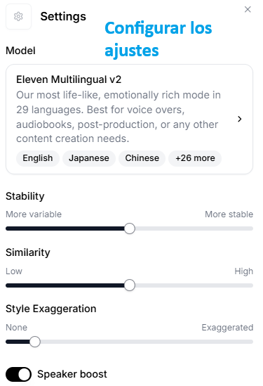

1. Suno AI => herramienta que utiliza la IA (Inteligencia Artificial) generativa para generar canciones y pistas de audio personalizadas y adaptadas a diferentes géneros musicales y preferencias del usuario. Fue originado en EE.UU por un grupo de investigadores y emprendedores.
2. Udio AI => herramienta que utiliza la IA (Inteligencia Artificial) generativa para generar canciones y pistas de audio personalizadas y adaptadas a diferentes géneros musicales y preferencias del usuario. Fue originado en Israel.
3. ElevenLabs => herramienta que utiliza la IA (Inteligencia Artificial) generativa para generar
locuciones a partir de una serie de ajustes:

1. Model: el modelo que quieres usar para que se ejecute la locución, es decir, la elección del locutor o voz clonada, de acuerdo al idioma, acento y tipo de locución.
2. Stability: el nivel de emoción en el discurso, es decir, a más nivel, más alegría, a menos nivel, más seriedad.
3. Similarity: la precisión de la voz clonada o locutor elegido imitando al original.
4. Style exaggeration: el nivel de exageración de los matices de la voz.
5. Speaker boost: la intensidad y el volumen de la voz.
Fue originado en EE.UU.
4. Adobe Podcast => herramienta que utiliza la IA (Inteligencia Artificial) generativa para generar podcasts. Fue originado por Adobe.